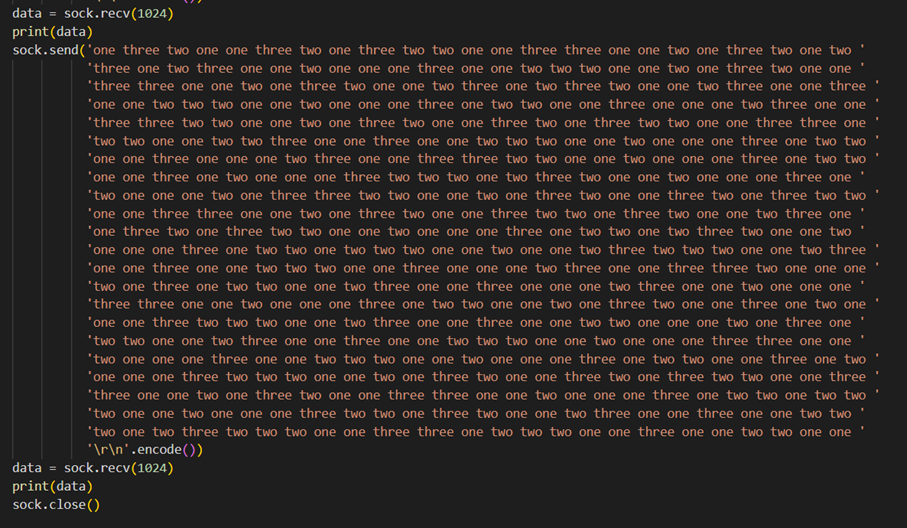

Blog Ruben Aspeslag
Ik ben Ruben Aspeslag (3de jaar student toegepaste informatica bij howest). In deze blog schrijf ik over mijn ervaring tijdens de verschillende IT gerelateerde events waar ik de afgelopen 2 jaar naartoe ben geweest.
Cybersecurity Challenge kwalificatieronde 2022
Op 10 en 11 Maart 2022 vond de Cybersecurity challenge Belguim kwalificatieronde plaats. De bedoeling van dit event was om zoveel mogelijk uitdagende opdrachten die met Cybersecurity te maken hebben uit te voeren. Iedereen moest zich al op voorhand inschrijven in groepen van maximaal 4 leden, wij hebben de naam SweatLords gekozen. Onze groep bestond uit 3 leden, Maarten, Sam en mezelf (Ruben).
Deze kwalificatieronde was volledig online verlopen, maar aangezien onze school Howest hier ruimte voor voorzien had in het schoolgebouw, hebben wij er als groep voor gekozen om daar aanwezig te zijn. Op deze manier hadden we toch het gevoel dat wij samen aan een event mee deden.
De spelregels waren zeer simpel, bij het begin van deze ronde waren alle opdrachten 500 punten waard. Telkens als er iemand een opdracht volbracht zakte deze waarde. Een opdracht kon niet zakken tot onder de 50 punten, ook als iedereen die heeft kunnen volbrengen. Als jij die opdracht dan al eerder volbracht had daalde je score ook mee. Op deze manier maakte het niet uit of je een opdracht als 1ste volbracht of als laatste. Als je al een paar opdrachten volbracht had, zag je je score zeer snel naar beneden gaan, wanneer ook andere mensen die opdrachten volbrachten. De opdrachten waren ook gelabeld naar moeilijkheidsgraad, moeilijke opdrachten waren over het algemeen meer punten waard omdat er minder groepen waren die die konden volbrengen.
Aangezien dat wij ons met 3 studenten hadden ingeschreven die “Software ingeneer” studeren, en die ons nog niet genoeg in security hebben verdiept, wisten wij ook al op voorhand dat wij eigenlijk niet zo veel kans maakten om te winnen. Toch leek dit ons een mooi event om eens mee te nemen. Wij hebben dan toch nog een 5-tal opdrachten kunnen volbrengen. Uiteindelijk zijn wij als 80ste plaats geëindigd met 828 punten. Dit was niet slecht aangezien er 253 groepen waren ingeschreven. Deelnemen is ook belangrijker dan winnen. Ik zou dit event zeker aanraden voor studenten informatica die zich al in security verdiept hebben.
Afstudeerbeurs Gent
De afstudeerbeurs in Gent ging door op 23 maart 2023 in hal 1 van Flanders Expo Gent.
Dit was een groot event waar veel grote bedrijven hun eigen standje hadden, de bedoeling van dit event was om contacten te leggen met mensen uit het werkveld. Veel verschillende bedrijven hebben mij daar verteld over hun grote IT-projecten die ze momenteel aan het uitvoeren zijn.
Open-source café


Het open source café ging door dinsdag 30 maart 2023 in De Krook Gent. Dit event werd georganiseerd door Inuits. Inuits is een Belgisch IT bedrijf die open source en digitale oplossingen maakt voor hun klanten. Dit bedrijf is er erg innovatief en is erg enthousiast over open source, het hergebruiken van technische componenten en DevOps . Inuits heeft ook veel consultants die ingehuurd kunnen worden door andere bedrijven om hun processen vlotter te laten verlopen.
In het begin van het event werd een introductie gegeven en kregen we een uitleg over wat open source is, snel volgde de visie van het bedrijf Inuits hierover. Er werden veel voorbeelden gegeven van open source toepassingen.
We kregen ook het advies om Closed source applicaties zo veel mogelijk te vermijden. Er werden ook veel alternatieven voorgesteld om zo veel mogelijk Closed source applicaties te vervangen door open source applicaties. Zoals het gebruik van Linux in plaats van Windows.
Hierna heeft een consultent van Inuits uitgelegd wat een consultent is, wat hij precies doet als werk, en welke talenten je allemaal nodig hebt als je zelf ook een consultent wil worden. Daarna was het event eigenlijk al afgelopen maar kreeg iedereen eerst gratis pizza en hebben we nog gepraat met het personeel van Inuits en met andere studenten. Toen andere studenten Toegepaste informatica van howest en ik een gesprek aangingen met een van de organisatoren kregen we al snel een privé uitleg over Pupit vs Ansable.
microsoft Summit

Microsoft heeft op vrijdag 7 oktober een online studentensessie gehouden. Dit werd gestreamd via deze link: https://www.youtube.com/watch?v=TLJvG98pSkc , waar de opname nog steeds beschikbaar staat. Alle afbeeldingen in deze blogpost zijn screenshots uit deze livestream.
Eerst hebben de Microsoftmedewerkers die dit online event gehost hebben, hun eigen carrières en hun ervaring met computers en programmeren besproken. Vervolgens hebben ze de technologieën die ze vaak gebruiken kort vermeld.
Vervolgens kwam er een uitleg over Cloud advocates en design thinking. Daarna was er een pauze van 5 minuten

Hierna volgde een uitleg over de cloud en de pro’s en de cons hiervan. Hierbij hebben ze het shared responsibility model ook besproken. Voor mij was dit wat minder interessant, omdat ik alles dat hierover werd gezegd, al geleerd had in mijn 1ste en 2de jaar toegepaste informatica bij Howest.

Daarna kwam er een uitleg en een demonstratie van github, dit is een zeer nuttige tool voor programmeurs die vaak gebruikt wordt, waardoor dat zeer interessant is voor beginners. Aangezien ik dit ook allemaal gezien had was dit voor mij niet nieuw. Ze hebben het ook enkel bij de basis van git gehouden, waarschijnlijk door tijdsgebrek.
Vervolgens werd er gedemonstreerd hoe je met een html (Hypertext Markup Language) template, een cv-website host met github en Azure (een Microsoft service). Dit was een zeer beknopte uitleg, die een beetje technisch was. Uiteindelijk was dit het resultaat.

Dan hebben ze een Imagine Cup besproken, wat een website is die geopend is door Microsoft, en hebben deelnemers van vroeger hun ervaringen hierover gedeeld.
Ik zou dit event aanraden voor 1ste jaar informatica studenten of voor studenten die aan het overwegen zijn om het volgende jaar informatica te studeren. Maar niet voor 3e jaarstudenten zoals mezelf.
fortinet Security fabric Challenge
Het bedrijf Fortinet (geen fortnite) heeft een Security challange gehosed op dinsdagavond 11 oktober 2022. Inschrijven was mogelijk op https://pages.info.exclusive-networks.com/BE-Fortinet-Security-Fabric-Challenge.
Het event ging door in het Exclusive Networks BeLux gebouw in de Stocletlaan in Duffel. Het ging vooral over netwerkbeveiliging, virtuele domeinen en andere netwerk configuraties. Fortinet Security Fabric is een Security tool die ontworpen is om het uitgebreide digitale aanvalsoppervlak te overspannen om brede, geïntegreerde en geautomatiseerde beveiliging van apparaten, gegevens en applicaties mogelijk te maken.
Eerst moest iedereen een account aanmaken op hun systeem, wat vanwege een paar technische problemen niet echt vlot verliep. Vervolgens kwam er een uitleg over Fortinet Security Fabric, ztna en CTNA.
Hierna moesten er groepen gevormd worden. Het was niet te bedoeling om je in te schrijven in groepen, maar we moesten daar ter plekke teams van 2 maken. Aangezien ik daar nog niemand kende heb ik aangesloten bij mijn buur, een iets oudere meneer die al een aantal jaar werkt in de cybersecurity.

Vervolgens was er een pizza pauze en was er tijd om te praten met de andere deelnemers.
Na de pizza pauze was er tijd om de Challenges verder uit te werken en werden er prijzen uitgereikt.
Dit was een leerrijke ervaring, de opdrachten waren zeer uitdagend. Ik zou dit event niet enkel aanraden voor studenten die graag bezig zijn met netwerk configuratie, en cybersecurity, maar ook voor werknemers met wat meer ervaring in de cybersecuritysector hebben. Dit event was minder specifiek gericht op studenten, dan de andere events. Hierdoor was er ook een meer ervaren publiek. Hierdoor is het erg moeilijk als student met wat minder ervaring om in de prijzen te vallen, maar deelnemen is belangrijker dan winnen.
Angular student day
De Angular student day ging door in Gent. In het begin van de dag kreeg iedereen een gratis ontbijt van de buffettafel. Wanneer de workshop begon was er eerst een korte uitleg over hoe de dag er ging uitzien. De workshop bestond uit verschillende onderdelen, eerst kregen we telkens een klassikale uitleg over het onderdeel en dan kregen we telkens de tijd om het toe te passen. Na elke oefening werd de oplossing ook nog eens klassikaal gemaakt en online ter beschikking gesteld. Daardoor kon je gewoon aan de volgende oefening beginnen als die ervoor niet helemaal gelukt was. Op het eind van de dag eindigden we met een werkende website die dynamisch data inlaadde met een API en met animaties.
De organisatoren van de workshop hebben ook al code klaargezet zodat wij die enkel nog moesten clonen. Iedere keer dat de uitleg over een bepaald onderwerp afgelopen was moesten we op deze code verder werken en telkens als iedereen klaar was met de oefeningen over een bepaald onderwerp, werd die klassikaal gemaakt en werd de oplossing naar de “exercises-sollution” branch van de repo gepushed.
Als je de code van de main branch runt zou dit het resultaat moeten zijn. Dit is ook waarop we verder gebouwd hebben.
Eerst ging het over de basisconcepten van Angular, zoals het maken van Angular componenten om een film op het scherm tevoorschijn te toveren.

Vervolgens kwamen ook andere thema’s zoals attribute directive, structural directive en pipes aan bod.
Daarna hebben we ook een API fetch gedaan om vervolgens de films die de server terugstuurde, mooi weer te geven op het scherm. Hiervoor werd een specifieke reposetory class aangemaakt om de “separation of concerns” principes toe te passen.
Dit was een zeer leerrijk event, ik zou dit event aanraden aan iedereen die wil bijleren over het javascript framework Angular, zonder zelf al veel ervaring te hebben met Angular. Het is wel de bedoeling dat je de basis van programmeren in HTML, CSS en JS al onder de knie hebt, vooraleer je met Angular begint.
Cybersecurity Challenge kwalificatieronde 2023

De Cybersecurity challenge ging online door op 24 maart 2023. Hiervoor had ik mezelf ingeschreven samen met Maarten Bridts. Onze groepsnaam was dan ook “RubenAndMaarten”. De bedoeling van dit online event was om zoveel mogelijk challenges uit te voeren. In het begin was elke opdracht 500 punten waard. Telkens als iemand een opdracht volbracht, ging het aantal punten van die Challenge omlaag. Het maakte ook niet uit wanneer je een challenge uitvoerde omdat iedere keer dat iemand een opdracht volbracht, die jij volbracht, gingen jouw aantal punten ook naar beneden. Een challenge kon niet zakken tot onder de 50 punten.
Voor de “Tell me what you see” challenge, moest je eerst connectie maken met een server met het cmd comando “nc 54.194.215.82 5000”. Vervolgens gaf de server je 1, en moest je snel “one” ingeven. Daarna gaf de server 11, en moest je even snel “one one” typen, en zo ging dat nog even door. Omdat je dat zo snel moest typen hadden wij ervoor gekozen om een python programma te schrijven, die die tekst veel sneller naar de server kon sturen met sockets, dan wij die konden typen.
Uiteindelijk ging dit zo ver door dat dit de laatste string was die we moesten doorsturen.

Er was ook een andere opdracht genaamd “90s chat”, waarbij je een niet zo goed beveiligde chat applicatie moest hacken en proberen admin te worden. (Deze opdracht was ons niet gelukt.)
Er waren nog veel meer opdrachten maar dit waren de 2 leukste (volgens mijn mening).
Uiteindelijk hebben Maarten en ik een 8-tal opdrachten volbracht voor 629 punten, waarmee wij op de 115de plaats geëindigd zijn. Het jaar ervoor waren wij op de 80ste plaats geëindigd met 828 punten maar toen hadden wij ook echt de volle 2 dagen geprobeerd om de opdrachten te volbrengen. Dit jaar was het event tijdens een les die wij ook wilden volgen waardoor we minder tijd hadden om de opdrachten te proberen. Dit jaar hebben wij ook meer challenges kunnen oplossen dan vorig jaar. Vorig jaar hebben wij 5 challenges opgelost, en nu waren het er 8, de challenges die wij dit jaar hebben opgelost waren wel veel minder punten waard.
Dit was wel een zeer tof event om aan deel te nemen met zeer leuke, die ook echt een uitdaging zijn.
Hack the future - vind de vergeten API-spreuken
Hack the future ging door op 15-16 november 2022, in de handelsbeurs in Antwerpen. Hiervoor kon je je in verschillende challenges inschrijven volgens je eigen voorkeuren en interesses. Arno en ik hebben ons ingeschreven als een team genaamd “rubenarno”, voor de challenge “vind de vergeten API-spreuken”. Deze challenge werd gehost door het bedrijf collide.
Wanneer je ingelogd was kwam je terecht in deze interface, hierop kon je alle verschillende teams zien, de briefing lezen en een groepscall opstarten, voor het geval dat er enkelen in je groep online deelnamen aan het event, wat bij ons niet het geval was. Op het einde van de dag moest je de code die je had geschreven om de challenges uit te voeren presenteren, en moesten de andere teams via deze interface stemmen op de beste oplossing.
Voor je aan de challenges kon me beginnen, moest je eerst een Angular project van git clonen, opzetten en runnen. Angular is een JS (Javascript) framework om websites mee te maken. Die Angular website was dan de interface waar alle challenges op tevoorschijn kwamen. Als een challenge klaar was moest je het antwoord naar de server sturen via een rest API. Dit kon met de Angular website die je lokaal draaide, of met postman.
Voor de challenges moest je antwoorden bruthforsen, tekst decoderen, decrypteren en tekst omdraaien met JS/TS (typescript).
Op het einde van de dag moest iedereen al zijn code klassikaal presenteren en moest iedereen stemmen op de beste oplossing.
Dit was een zeer leerrijk event, ik zou dit event aanraden voor elke student die al wat ervaring heeft met coderen in de specifieke categorie waarvoor hij zich inschrijft.